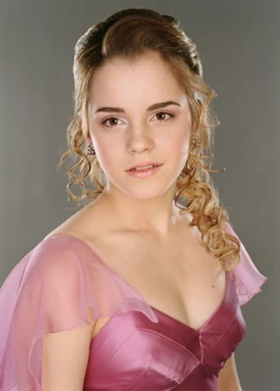
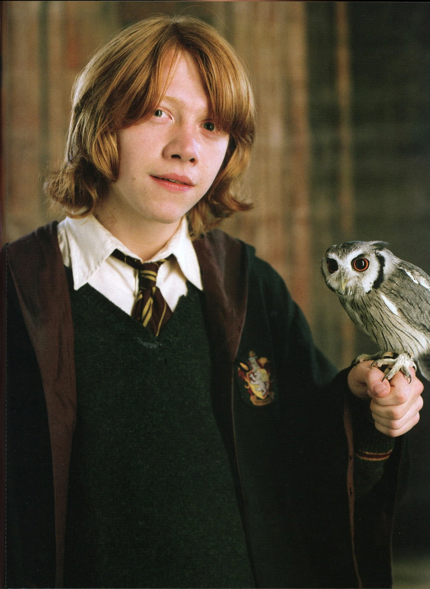
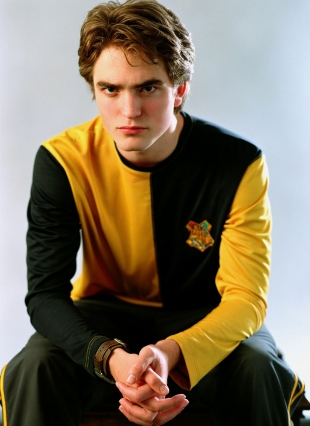
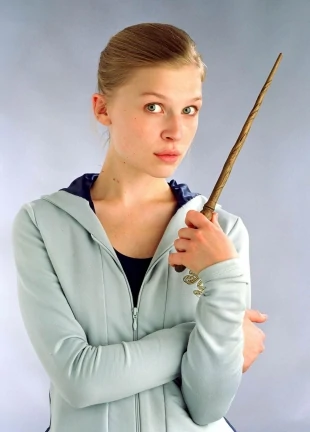
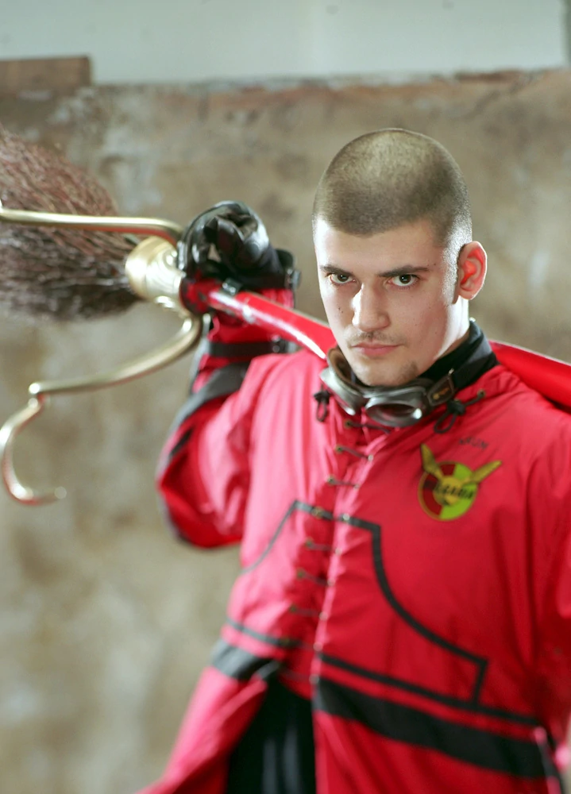

Les acteurs du film

Daniel Radcliffe dans le rôle d'Harry Potter

Emma Watson dans le rôle d'Hermione Granger

Rupert Grint dans le rôle de Ron Weasley

Robbert Pattinson dans le rôle de Cedric Diggory

Clémence Poésy dans le rôle de Fleur Delacour

Stanislav Ianevski dans le rôle de Viktor Krum